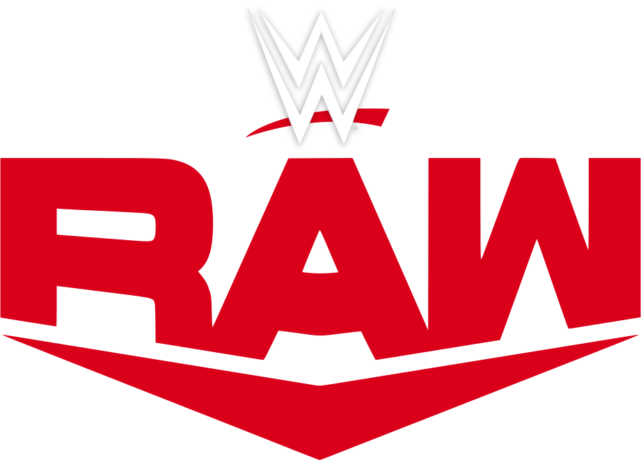
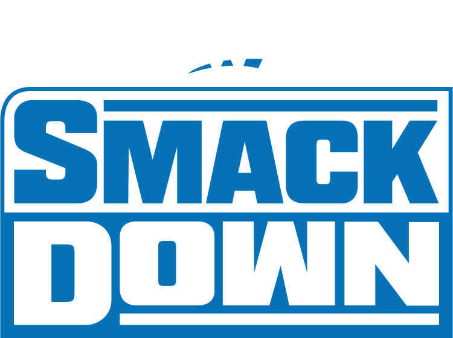
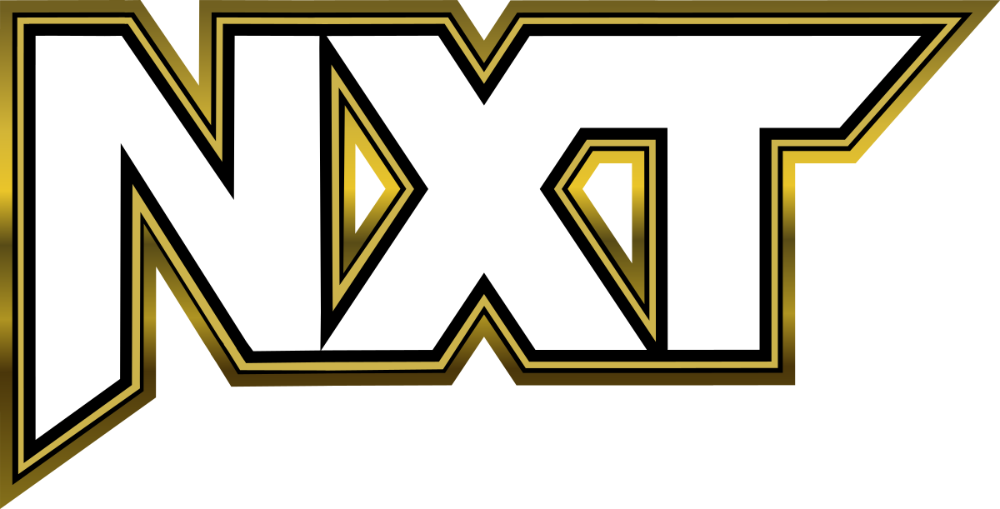

RAW
RAW, también conocida como Monday Night RAW, es una marca de WWE que se enfoca principalmente en la acción en vivo. Fundada en 1993, es la marca más antigua de WWE y cuenta con una gran cantidad de talentos de primer nivel.
Entre los luchadores más destacados de RAW se encuentran Liv Morgan, Finn Balor, Seth Rollins y Becky Lynch.
SmackDown
SmackDown es otra de las marcas de WWE 2K23 y es conocida por su enfoque en la presentación televisiva. SmackDown es considerada por muchos como la marca más emocionante de WWE.
Entre los luchadores más destacados de SmackDown se encuentran Roman Reigns, Edge, Bianca Belair y Asuka.
NXT
NXT es una marca de WWE 2K23 que se enfoca en la construcción de nuevos talentos y en brindar oportunidades a las superestrellas más jóvenes. NXT es conocida por su ambiente de lucha libre independiente y por ser el lugar donde muchos luchadores exitosos comenzaron sus carreras.
Entre los luchadores más destacados de NXT se encuentran Cora Jade, Wes Lee, Axiom y Nikkita Lyons.